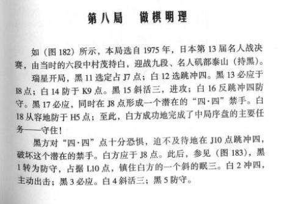

瑞星中局韬略（一）声东击西
#1 瑞星中局韬略（一）声东击西 作者：撒蓉儿 发表时间：2009-5-26 14:17:02
=======上图对应的爱五子棋谱代码如下，以便你拆解：========
h8h9h6i10i6i9g9g8j11i7i8g6f7h10j8j9k8l8l9j7k10i12h11f12g11i11i13k7l7e10
======================================================
#2 Re:瑞星中局韬略（一）声东击西 作者：越狱行辕 发表时间：2009-5-26 14:27:54
 这个不是老定式么啥时候成彭建国的东西了
这个不是老定式么啥时候成彭建国的东西了
#3 Re:瑞星中局韬略（一）声东击西 作者：茗弈小刀 发表时间：2009-5-26 14:30:37
期待。。。。。。。。。。。。。。。。。。。。。#4 Re:瑞星中局韬略（一）声东击西 作者：兔子哥哥 发表时间：2009-5-26 14:31:22
彭建国写的书不行！#5 Re:瑞星中局韬略（一）声东击西 作者：茗弈小刀 发表时间：2009-5-26 14:32:36
晕倒！我是狠稀饭建国的书，像五子棋九段感觉等！#6 Re:瑞星中局韬略（一）声东击西 作者：岳麓小棋后 发表时间：2009-5-26 14:40:32
他们写的书籍是入门和中级级别的，不是研究型级别的，再说了，就算一些高端的研究成果，出于国家利益或团体利益需要也不能就这么10几块RMB的就这么人手一册了吧
一般的情况是，某次大赛后，然后一些高端变化才流传坊间，再然后就人手一册了
［ 可乐可口 于 2009-5-28 21:22:35 时花20金币送鲜花一朵］
#7 Re:瑞星中局韬略（一）声东击西 作者：岳麓小棋后 发表时间：2009-5-26 14:41:58
我也喜欢他写的书，也许不太好，但写五子棋书籍的人实在是太少了，以至于很多书店根本找不到五子棋类的书籍，单从这个角度就该肯定#8 Re:瑞星中局韬略（一）声东击西 作者：撒蓉儿 发表时间：2009-5-26 14:44:07
本局取自于日本第四期名人站决赛，有名人西村敏雄迎战挑战者矶部泰山九段。前者执黑，后者执白。
黑方以“瑞星”开局，白四强防之后10I，以下开局阶段双方按定式弈至白10=9I点，，现在进入中局之后，黑11防于8I点，亦为强防点。白12守10G不仅防住对方一个活二，同时为9F的冲四点做下一个浮子。黑13守于9F点，防止对方的冲四，白14成双活二和一个眠二，强点！现在以把子力集中于上翼。黑15眠三防守；白16斜二同时眠三，并阻断对方的大跳二。黑17冲四进攻，白18必应。黑19斜跳三；败20中间防守，黑21再斜活三；白22眠跳三防守。黑23无法继续强攻，只得转为防守；白24乘机大跳二，并斜眠跳三，好棋！白方继续加强上翼的子力。黑25跳三，不得而为之，企图占住白方的一个冲四点，白26反冲四，自然之着，黑27必应；白18突然在下翼活三！白方以观察到黑方忙于应付，才决定在下方详攻诱敌。果然，黑29上当，防于9L点正着应防于9H点。白30再次转向上方大跳三（形成特型三）并斜跳三，诱敌斜跳三。黑方果然中计：
=======上图对应的爱五子棋谱代码如下，以便你拆解：========
h8h9h6i10i6i9g9g8j11i7i8g6f7h10j8j9k8l8l9j7k10i12h11f12g11i11i13k7l7e10f10h7g7f9d11h12g12g13f14d10
如上图黑31斜跳三，进攻，自以为得意，其实中计！败32不理睬对方的活三先手，先于9H点冲四！黑33必应；白34再斜冲四，从下方有转回到上方，黑35亦必应；白36不慌不忙的反跳三，打断对方的先手。黑37只得中间防守；白38斜活三。黑39防守，无回天之力。白40再斜跳三，将迫使黑方于5E点落之形成““四四”禁手，黑方投子认负。
此局中，白方通过下方的佯攻，伪装进攻方向，造成黑方的错觉，使黑方的防守子力摆错了位置，从而达到在上方的巧布精兵，迫敌禁手，出奇制胜。
“声东击西”的“声”、“击”并不限于两个目的，或东、西两个方向，而常常是指声称进攻的一个方面与实际进攻的方面是不相同的，或者是有差异的。作为中局的胜战谋略，它历来被五子棋高手所重视。“声东击西”的关键在“声东”的成攻是指己方采取机动灵活的方式，巧妙的制造虚假的胜利，促使对方指挥错乱，在对方的混乱中，己方顺利的完成目标。“击西”的“西”就是目的。没有“声东”的烟雾，就“击西”难以成功。因此，运用“声东击西”这一谋略，必须观察对方是否混乱无主，才能决定弈取。若对方混乱无主时运用这一计谋就可取胜，反之，则可能是败。
======================================================
［ 茗弈小刀 于 2009-5-26 14:49:33 时奖励此帖[金币加 20 威望加1］
#9 Re:瑞星中局韬略（一）声东击西 作者：撒蓉儿 发表时间：2009-5-26 14:46:21
晕哦~~我还没打完你们就急得不行了呀，看来不能这样发了
#10 Re:瑞星中局韬略（一）声东击西 作者：茗弈小刀 发表时间：2009-5-26 14:47:37
老师们的书是心血的成果，不能用钱来衡量其价值。
也许对于有的高手来说是入门的书，但我们刚学棋不就是这么入门的吗？何况老师们写书的造诣，如果我们全部深刻领悟了，那么我想我们的棋力和思想也提高到了一个不错档次。
［ 撒蓉儿 于 2009-5-26 14:51:22 时花20金币送鲜花一朵］
［ ≈★真心★≈ 于 2009-5-26 15:08:43 时花20金币送鲜花一朵］
#11 Re:瑞星中局韬略（一）声东击西 作者：茗弈小刀 发表时间：2009-5-26 14:49:00
 蓉儿妹妹
蓉儿妹妹
#12 Re:Re:瑞星中局韬略（一）声东击西 作者：岳麓小棋后 发表时间：2009-5-26 14:55:23

这两局也很有趣，算是这个瑞11的入门介绍吧，中村茂持白一胜一败，看来这一年来中村大人对这个11算是无视了，去年赢的太顺手了？
#13 Re:瑞星中局韬略（一）声东击西 作者：兔子哥哥 发表时间：2009-5-26 15:06:27
呵呵五子棋九段感觉就是中村的实战棋谱，彭建国就是把它给汇编了一下，再加上几句白12活三，黑13挡在H10之类的解说，哈哈就是一本书。可以这样说，小刀你来解说都比他解说的好！不信，你可以问下大家！唯一可以看得就是和李老师写的寒星必胜那本书，再有就是五子棋妙手1000题，题集而已，有不少抄别人的，比如三手胜题集.大家可以细心找一下，也有很多错误的地方.其他的书除了规则和花蒲外没有错误外，其他的开局简直就是误人子弟，04年前的就算了，你可以用当时研究水平不行来托词，05年以后的书竟然也是一个样子，汗！有出书的那个钱还不如去印一些实战棋谱呢！我是看了彭建国出的几乎所有书才敢发此言论的，包括最近出的《五子棋长星指路》，要辩驳我的人请最少看过他5本书再来辩驳，没有看过，我就认为你没有评论的发言权！谢谢！［ 茗弈小刀 于 2009-5-26 16:16:55 时花20金币送鲜花一朵］
#14 Re:瑞星中局韬略（一）声东击西 作者：岳麓小棋后 发表时间：2009-5-26 15:26:00
呵呵，这个是当然的，可是LS相信也听说过，像棋情、空恨、海月这样的拆棋高手，他们肯流传出来的棋谱，上面也有很多地方的误人子弟的，而且我记得我看他的书的时候，他开篇或后记都会有这么一句话，不是普及读物就是说爱好者的参考教材或者五子棋水平在进步，编者水平有限啥的，平心而论，他的书上的确找不到什么对现下还未地毯的几个局面有什么好的建议分析的地方，而且就是他过往的一些5手2打结论也觉得个别地方有点出入，但是这并不是我们说它差的理由，五子棋就是这样一个棋种，老日本定式不也是一路磕磕碰碰走过来的［ 茗弈小刀 于 2009-5-26 16:17:32 时花20金币送鲜花一朵］
［ 撒蓉儿 于 2009-5-26 16:59:27 时花20金币送鲜花一朵］
#15 Re:瑞星中局韬略（一）声东击西 作者：撒蓉儿 发表时间：2009-5-26 15:53:46
此篇只供入门初学者参考，蓉儿不参与评论哈
#16 Re:瑞星中局韬略（一）声东击西 作者：茗弈小刀 发表时间：2009-5-26 16:00:05
我觉得任何一本书都有它的优点，否则这么多人去买都是白痴吗？如果兔子哥哥觉得彭建国的书很不好，敢问为什么要看这么多？我如果觉得谁的书不好，一本也看不完。［ 一期一会 于 2010-9-10 20:00:34 时花20金币送鲜花一朵］
#17 Re:瑞星中局韬略（一）声东击西 作者：茗弈小刀 发表时间：2009-5-26 16:01:31
当然你现在看觉得学不到东西，那说明你进步了，但这也不能否认前辈们的劳动和成果吧？也许他的书有不足，不过,书籍重在普及五子棋的发展,讲的是五子棋行棋的棋理,而不是五子棋的学术报告。所以从发展和普及来说,他的书籍还是很好的,在现有五子棋书籍缺乏的时期,他的书籍也可谓不错的参考了。我觉得好与不好，都不是有你我可以评价的，他们是先驱,虽然有不到位的地方,但是他们还是为中国的五子棋事业做了很大贡献。我是怀着尊敬的心情。
［ 撒蓉儿 于 2009-5-26 16:05:58 时花20金币送鲜花一朵］
［ ≈★真心★≈ 于 2009-5-26 16:12:37 时花20金币送鲜花一朵］
#18 Re:瑞星中局韬略（一）声东击西 作者：不知 发表时间：2009-5-26 16:53:22
相比围棋和中国象棋.五子棋的刊物少之又少.编写刊物的老师不是无敌的.不可能知道所有的新定
他们编写书籍的时候主要是给一些初学的朋友看的.引导初学者的思路.
不管是任何领域的刊物.里面的内容都不可能是百分之百绝对正确.如果需要百分之百绝对正确才能出书.
那么人类第一本书估计是在五千万亿年后可能会出现.那这样人类的文明也就倒退了.
我有把彭建国老师的书看完了.全部的.所以我觉得我有资格发表评论.
举个例子.日本那边就发表了不少刊物.我基本全部都有(电子书类).谁能保证那些刊物所讲的内容就全部都是对的呢?
国内五子刊物少之又少.很多人都在说要推广五子棋.在新华书店走遍恐怕五子棋的刊物都不到围棋的十分之一.
难得有老师舍得花时间出来编写书籍.这已经是很可贵了.我们可以要求老师在他的极限内做到最好.但绝对不能强求老师要做到全世界最好.这是不可能的.
借一句话:所有的事物都需要一个成长和检讨的过程.
希望五子棋界的各位高手能多出些相关的质量高的五子棋书籍给五子爱好者们.价格方面嘛尽量不要定那么高~
期待各位大师出书~
［ 茗弈小刀 于 2009-5-26 16:56:55 时花20金币送鲜花一朵］
［ 撒蓉儿 于 2009-5-26 16:58:59 时花20金币送鲜花一朵］
#19 Re:Re:瑞星中局韬略（一）声东击西 作者：兔子哥哥 发表时间：2009-5-26 23:29:44
呵呵我之所以买这么多彭建国的书看，是因为当时我学棋时候书店没其他人的书。至于我为什么说他的书误人子弟，是因为里面的错误太多了，不是因为我的水平提高了，就看不上眼了！比如《五子连珠必胜法》，《简明图解五子棋》，这些应该是最基本入门的书吧，我现在依然是恭敬有加！而彭老师的书里有好多地方是初学者就能挑出的错误，我是04年2月学下的 五子棋，当时就买了<<五子棋开局指南》和《五子棋选点诀窍》2本书，其中《五子棋选点诀窍》不是那本讲寒星的书，是另外一本。这2本书是讲24开局的，我看了不到2个 星期，就从中发现了 很多错误的问题，并且我 根据里面学的走法去和别人下，结果里面说是必胜的局面跟别人下竟然必败了。呵呵那盘到现在还记得，是一个类似于雁阵的开局，黑大概走到11时候，就自己做了一个3，书上就说必胜了，结果竟然被白一路攻击给杀了，当然你可以说我那时候，甚至于现在实力弱没能防守正确。呵呵现在我用黑石和 终结者已经地毯了，呵呵根本就没3.4步棋的 杀，书上就好像走到11，然后给出一个结论，黑棋必胜了！不好意思，又啰嗦了这么多，细心地朋友会发现这个问题的的！当然，其他的还有呵呵 ，就不说了，建议本贴关于我的看法的讨论就此打住。我 并没有想着要攻击谁，实话而已。诸位就当我姑妄言之，姑妄听之！谢谢
#20 Re:瑞星中局韬略（一）声东击西 作者：刀魂 发表时间：2009-5-27 1:09:11
哪来 那么多 理论啊。。。晕s
#21 Re:瑞星中局韬略（一）声东击西 作者：samaki 发表时间：2009-5-28 2:30:16
=======上图对应的爱五子棋谱代码如下，以便你拆解：========
h8h9j10i9i10j8g9g10i8k7h10h7i7f10i11j12h11k10h12
======================================================
#22 Re:瑞星中局韬略（一）声东击西 作者：samaki 发表时间：2009-5-28 2:37:05
发错了地方
#23 Re:瑞星中局韬略（一）声东击西 作者：五子米猫 发表时间：2010-9-10 12:03:44
是啊 这段时间彭老师新出了《五子棋中级指南》一书，也被我发现了个错，呵呵#24 Re:瑞星中局韬略（一）声东击西 作者：与郎共五 发表时间：2010-9-10 17:15:51
错多是事实 。#25 Re:瑞星中局韬略（一）声东击西 作者：自来水 发表时间：2010-9-10 19:12:54
个人觉得写的是不怎么样
#26 Re:瑞星中局韬略（一）声东击西 作者：一期一会 发表时间：2010-9-10 19:58:44
要知道在那個連珠剛在中國起步的階段，五子棋的整體實力還很薄弱，有人出來些棋評來思考一些東西，并將其分享是不容易的！試問那些輕易否認別人的人，講你置身于那個時代背景中，你就一定能寫出更好的書么？
我覺得彭建國老師的書寫的挺好，對於一個參加實戰比賽有4,5年的人來說，仍然覺得即使作為一本入門書也可以有常讀常新的感覺。可以看出彭老師是用心來寫書的，而对于一个真正喜欢棋艺的人來說，永远都面对着一个入门的问题，因为这道门只有在人的心中，才能打开。
［ 茗弈小刀 于 2010-9-11 11:51:00 时花20金币送鲜花一朵］
［ 茗弈小刀 于 2010-9-11 11:51:37 时花20金币送鲜花一朵］
［ 茗弈小刀 于 2010-9-11 11:51:57 时花20金币送鲜花一朵］
#27 Re:瑞星中局韬略（一）声东击西 作者：米兰 发表时间：2010-9-10 20:03:15
那个时候类似黑石这样的五子棋软件还没有问世，棋谱定式全是人脑手拆的，在资料匮乏的情况下，错误不可避免，能做到这样已经不错了。就像用笔作画的人，永远做不到电脑绘制那么精确的程度的，只能尽量相象罢了。［ 茗弈小刀 于 2010-9-11 11:52:27 时花20金币送鲜花一朵］